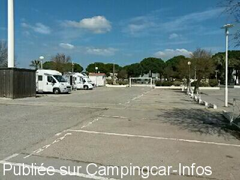
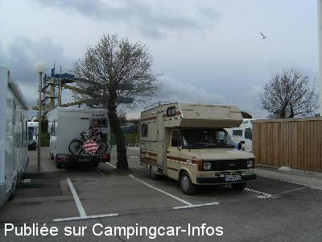
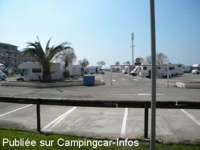
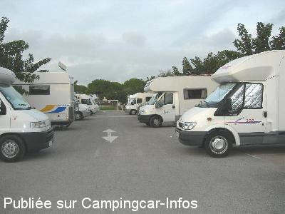

ASN = Aire de services avec stationnement nuit possible de :
LE GRAU DU ROI
(N° 727)
Accès/adresse :
Rue du Commandant Marceau
30240 LE GRAU DU ROI
30240 LE GRAU DU ROI
Latitude : (Nord) 43.54069° Décimaux ou 43° 32′ 26′′
Longitude : (Est) 4.13347° Décimaux ou 4° 8′ 0′′
Tarif : 2016
Stationnement : 11,90 à 26,50 €
Eau ou 55 mn d'électricité : 2 €
Type de borne : FLOT BLEU
Services :


Autres informations :
21 emplacements en bord de bord de mer
La haute saison à partir du 01/06

Le 18/03/2016 par Jérôme

Le 23/04/2010 par ppbb

Le 12/04/2010 par didierlinares

Le 25/10/2005 par michel84
de
nicoland
le 13/04/2016 :
Arrivée ce jour. Plus de barrière horodateurs coût à lheure soit 17euro pour 23h.
Arrivée ce jour. Plus de barrière horodateurs coût à lheure soit 17euro pour 23h.
de
jerome
le 20/03/2016 :
§ Nuit calme, à deux pas de la plage, proche des commerces.
Borne Aire Services, 2 euros pour 55 mn électricité ou 10 mn d'eau, opérationnelle.
Je confirme le tarif de 11,90 euros la nuitée actuellement.
Merci à la municipalité de nous accueillir.
§ Nuit calme, à deux pas de la plage, proche des commerces.
Borne Aire Services, 2 euros pour 55 mn électricité ou 10 mn d'eau, opérationnelle.
Je confirme le tarif de 11,90 euros la nuitée actuellement.
Merci à la municipalité de nous accueillir.
de
co26
le 19/11/2015 :
Arrivé le samedi 14/11/2015, reparti le Dimanche 15/11, 11€ les 24h, 2€ les 10mm d'eau, vidange, la plage à coté, les commerces, très intéressant hors saison, trop cher l'été par rapport aux prestations.
Arrivé le samedi 14/11/2015, reparti le Dimanche 15/11, 11€ les 24h, 2€ les 10mm d'eau, vidange, la plage à coté, les commerces, très intéressant hors saison, trop cher l'été par rapport aux prestations.
de
rjgca
le 31/10/2015 :
Le parking est proche de la plage, des commerces, du magasin d'usine de Little Marcel
Effectivement pour le prix l'eau pourrait être comprise......
Le parking est proche de la plage, des commerces, du magasin d'usine de Little Marcel
Effectivement pour le prix l'eau pourrait être comprise......
de
Delarche
le 18/05/2015 :
§Bonjour amis cc
De passage le 16 mai 2015 le tarif est passé depuis le 11/05 à 26.50 euros et le parking a diminué des 3/4 et ce jusqu'au 30 septembre après cette date il passera a
11.90 euros et jusqu'au 30 avril 2016.
voilà ...voilà..
§Bonjour amis cc
De passage le 16 mai 2015 le tarif est passé depuis le 11/05 à 26.50 euros et le parking a diminué des 3/4 et ce jusqu'au 30 septembre après cette date il passera a
11.90 euros et jusqu'au 30 avril 2016.
voilà ...voilà..
de
yvan30
le 13/03/2015 :
De passage debut mars 2015, tarif pour 24h 10,10€
On capte le WIFI Wiizone.Office.de.Tourisme. j'ai fait un essais de connection le forum CCinfo
De passage debut mars 2015, tarif pour 24h 10,10€
On capte le WIFI Wiizone.Office.de.Tourisme. j'ai fait un essais de connection le forum CCinfo
de
Auvergnat 63
le 22/07/2014 :
De passage le 15 juillet 14 sur cette aire, j'ai été particulièrement surpris par le prix du stationnement à savoir 21,5 € pour 24h, sachant qu'il n'y a aucun service pour ce prix sauf les vidanges....... A noter que le réglement se fasseà l'heure, donc si vous arrivez tard et repartez tôt, ça vous coutera un peu moins cher, mais quand même.
Pour moi une aire à fréquenter hors saison, d'autant plus qu'à cette période, le nbre de places est limité
De passage le 15 juillet 14 sur cette aire, j'ai été particulièrement surpris par le prix du stationnement à savoir 21,5 € pour 24h, sachant qu'il n'y a aucun service pour ce prix sauf les vidanges....... A noter que le réglement se fasseà l'heure, donc si vous arrivez tard et repartez tôt, ça vous coutera un peu moins cher, mais quand même.
Pour moi une aire à fréquenter hors saison, d'autant plus qu'à cette période, le nbre de places est limité
de
clap42
le 18/05/2014 :
§ de passage le 14 mai tarif 8.8 avec le grand parking très bien mais le gardien est venu nous prévenir à partir du 15 petit parking et 28 euros pour 24 h(nous n'avons pas vérifié le tarif on a fuit)et comme si cela ne suffit pas 2 euros supplémentaires pour la vidange ...
§ de passage le 14 mai tarif 8.8 avec le grand parking très bien mais le gardien est venu nous prévenir à partir du 15 petit parking et 28 euros pour 24 h(nous n'avons pas vérifié le tarif on a fuit)et comme si cela ne suffit pas 2 euros supplémentaires pour la vidange ...
de
jean pelazzi
le 11/02/2014 :
bonjour de passage au grau du roi le parking de la plage fermé juste les 20 places de l été bizarre car de septembre a mai toute la place pour nous merci de me repondre
bonjour de passage au grau du roi le parking de la plage fermé juste les 20 places de l été bizarre car de septembre a mai toute la place pour nous merci de me repondre
de
coala84
le 04/01/2014 :
§ passé 24h le 2/01/2014 au calme en cette saison les attractions nautique sont fermée- a100m de la plage--pour 8.80€ - bien
§ passé 24h le 2/01/2014 au calme en cette saison les attractions nautique sont fermée- a100m de la plage--pour 8.80€ - bien
de
Guy
le 22/05/2013 :
Bonjour,
Attention cette année le tarif été (19,60 euros) est à partir du 15 mai !
De plus la mairie a diminué le parking de moitié pour laisser la place aux voitures !
Bonjour,
Attention cette année le tarif été (19,60 euros) est à partir du 15 mai !
De plus la mairie a diminué le parking de moitié pour laisser la place aux voitures !
de
coco74
le 04/11/2012 :
superbe aire
tres bien placee, au bord de la plage
seul soucis, vol de velos tres frequent, cadenas ne suffisent pas, ils ne volent que les velos qui coutent cher; un conseil mettez des cadenas style motos
superbe aire
tres bien placee, au bord de la plage
seul soucis, vol de velos tres frequent, cadenas ne suffisent pas, ils ne volent que les velos qui coutent cher; un conseil mettez des cadenas style motos
de
Florence
le 03/10/2012 :
arrives mi septembre 2012 sur cette aire elle etait saturee .dommage que certains campicaristes se garent de facon anarchique en s octroyant 2 emplacements pour un seul vehicule!!!!!!!!nous ne sommes pas restes
arrives mi septembre 2012 sur cette aire elle etait saturee .dommage que certains campicaristes se garent de facon anarchique en s octroyant 2 emplacements pour un seul vehicule!!!!!!!!nous ne sommes pas restes
de
gerard38
le 09/11/2011 :
Arrivée sur l'aire le 29/10 vers 15h00, déjà beaucoup de monde, peut être le beau temps. Aire très bien située : 50m de la plage et à 600m à pied du centre du Grau du roi en passant par la plage, à 150 d'un super marché. Très bons équipements, prix raisonnable : 8.8 + 2 euros pour le plein d'eau et 50mn d'élec.
Arrivée sur l'aire le 29/10 vers 15h00, déjà beaucoup de monde, peut être le beau temps. Aire très bien située : 50m de la plage et à 600m à pied du centre du Grau du roi en passant par la plage, à 150 d'un super marché. Très bons équipements, prix raisonnable : 8.8 + 2 euros pour le plein d'eau et 50mn d'élec.
de
M.et Mme BARDE Henri St Maurice d
le 30/09/2011 :
§
Passé fin aout 2011: tarif 19.60 euros jusqu'au 18 septembre. A compter 19 septembre: 8.80 euros soit une augmentation de 1.20 euros en 6 mois. WC publics hors service depuis juin 2011. Urinoirs dégradés par un camping cariste qui a vidé sa K7 dedans alors que la borne fonctionne correctement. Encore mal vu à cause de certain énergumène qui se dise camping cariste.
du 19 au 27 sept nous avons passé un bon moment avec le beau temps et l'amitié de beaucoup de CCaristes de toute la France.
§
Passé fin aout 2011: tarif 19.60 euros jusqu'au 18 septembre. A compter 19 septembre: 8.80 euros soit une augmentation de 1.20 euros en 6 mois. WC publics hors service depuis juin 2011. Urinoirs dégradés par un camping cariste qui a vidé sa K7 dedans alors que la borne fonctionne correctement. Encore mal vu à cause de certain énergumène qui se dise camping cariste.
du 19 au 27 sept nous avons passé un bon moment avec le beau temps et l'amitié de beaucoup de CCaristes de toute la France.